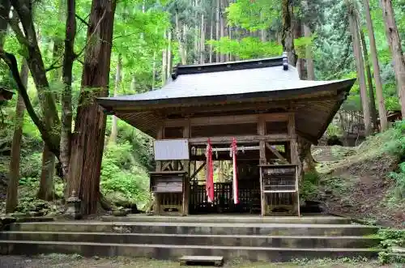
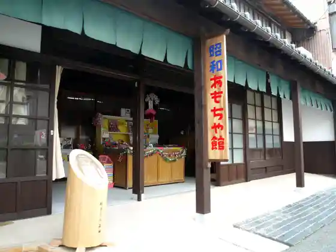
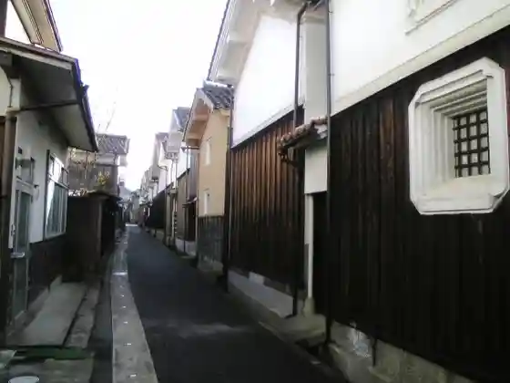

Fudo In Iwaya Do
Wakasa, Tottori · 0858-82-2237 · Official / source link
Wakasa Tetsudo Wakasa Eki
Wakasa, Tottori · 0858-82-0919 · Official / source link
Ejima Shrine
Wakasa, Tottori · 0858-82-2237 · Official / source link

Showa Omocha Kan
Wakasa, Tottori · 0858-82-2237 · Official / source link

Kura Tori Kariya Tori
Wakasa, Tottori · 0858-82-2237 · Official / source link

Sambyaku Ta Shi House
Wakasa, Tottori · 0858-82-0583 · Official / source link
Wakasa Kori no Yama Ski Area
Wakasa, Tottori · 0858-82-1111 · Official / source link
Roadside Station Wakasa Sakura N Bo
Wakasa, Tottori · 0858-76-5760 · Official / source link
Wakasa Shrine
Wakasa, Tottori · 0858-82-2237 · Official / source link
Kori no Yama Shizen Fureai Kan Kyo Forest
Wakasa, Tottori · 0858-82-1620 · Official / source link
Kori no Yama Tozan
Wakasa, Tottori · 0858-82-1620 · Official / source link
Wakasa Folk History Museum
Wakasa, Tottori · 0858-82-0583 · Official / source link
Takumi no Kan
Wakasa, Tottori · 0858-82-0583 · Official / source link
Benten Musume
Wakasa, Tottori · 0858-82-0611 · Official / source link
Fiirudogemu
Wakasa, Tottori · 0858-82-1620 · Official / source link
Omoide Bokkusu
Wakasa, Tottori · 0858-82-1620 · Official / source link
Wakasa Town Hall
Wakasa, Tottori · 0858-82-2211 · Official / source link